신주쿠
신주쿠쿄엔 공원에서 산책, 신주쿠산초메에서 쇼핑과 맛집탐방, 가부기쵸에서 한잔, 도쿄 도청에서 야경까지
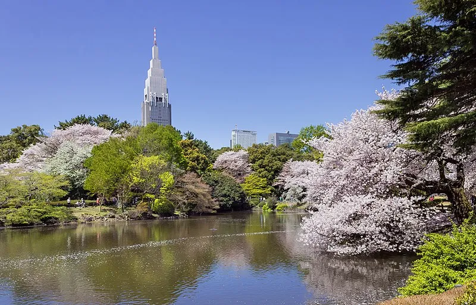

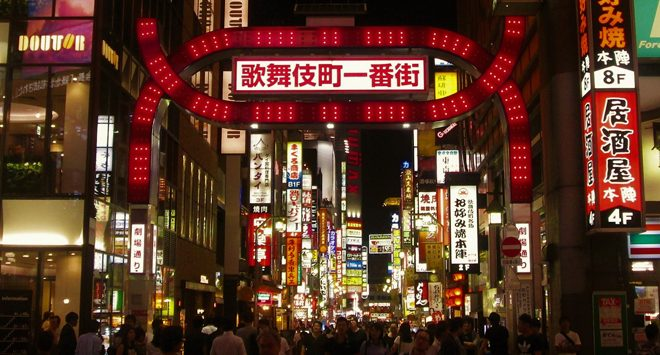
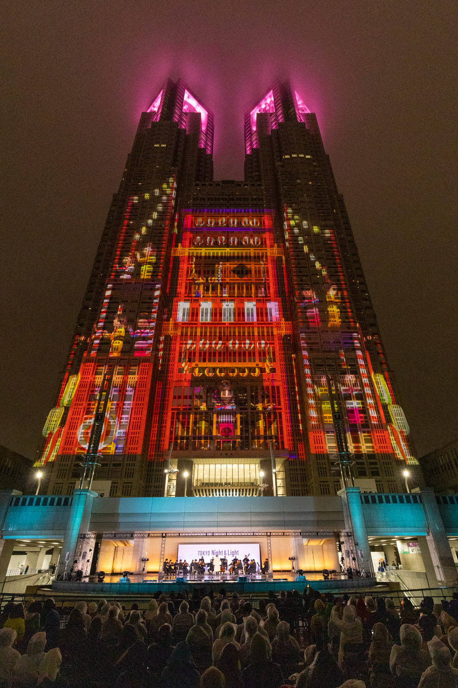
- 추천 기간 : 봄(벚꽃명소)
- 꿀팁 : 도쿄도청은 무료입장
시부야
시부야 스크램블 교차로에서 시작해서 일본 10대 패션의 성지 하라주쿠와 명품거리인 오모테산도를 지나 도쿄에서 가장많은 사람들이 오는 메이지신궁으로 마무리
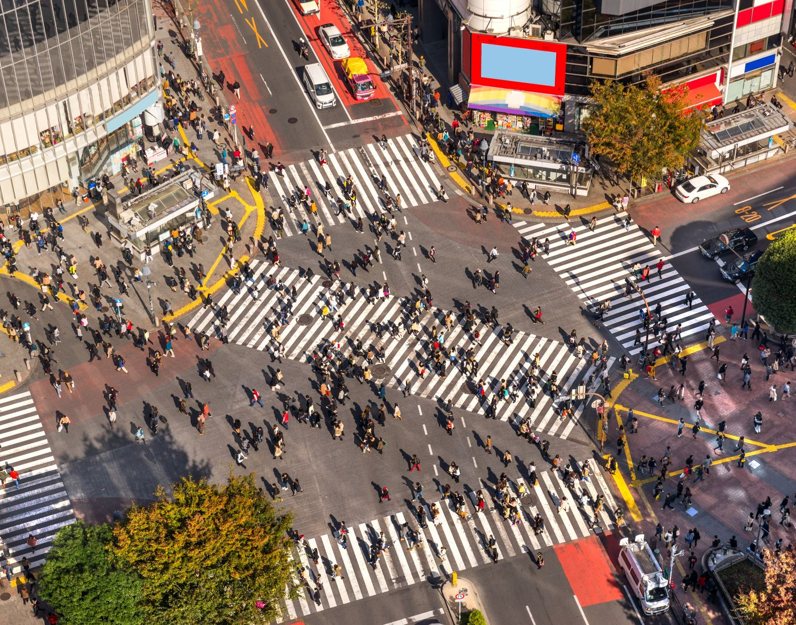
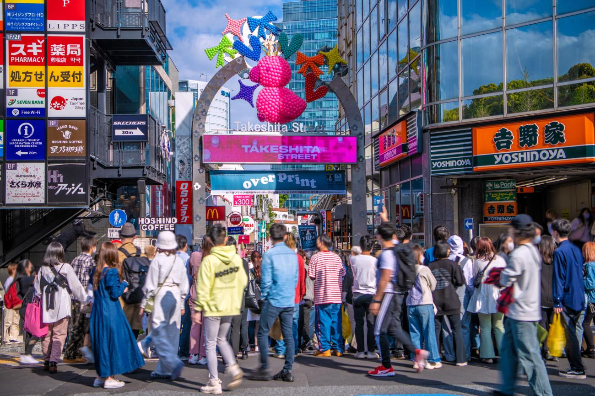
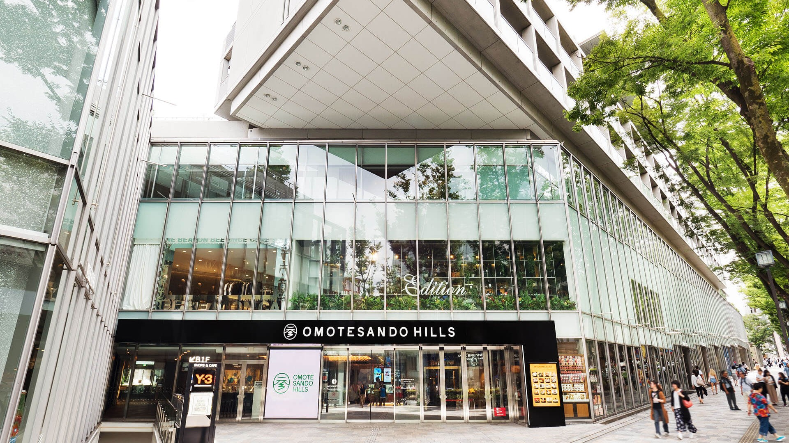
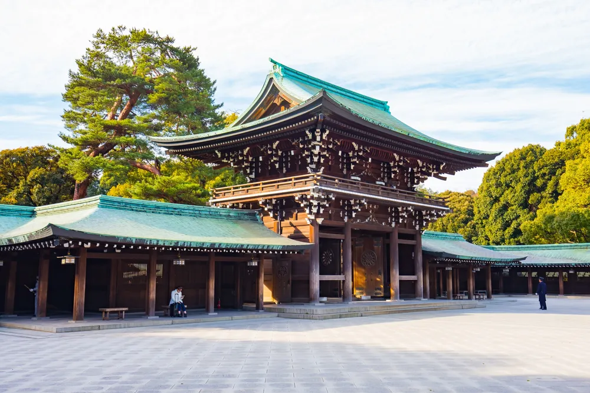
- 특징 : 일본의 개성있는 패션을 볼 수 있음
- 꿀팁 : 유명한 크레페집먹으며 메이지신궁으로
도쿄역 근방
교통의 중심지 도쿄역, 상류층 명품거리 긴자, 해산물 시장 츠키지시장, 일본의 왕이 사는 고쿄
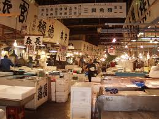
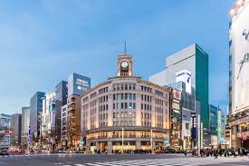
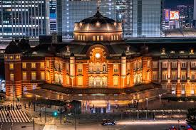
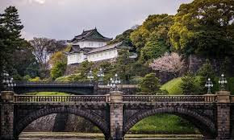
- 추천 시간 : 시장은 아침에 가는것을 추천
- 꿀팁 : 이동거리가 많으니 패스사용을 추천
아사쿠사 & 우에노
시부야 스크램블 교차로에서 시작해서 일본 10대 패션의 성지 하라주쿠와 명품거리인 오모테산도를 지나 도쿄에서 가장많은 사람들이 오는 메이지신궁으로 마무리
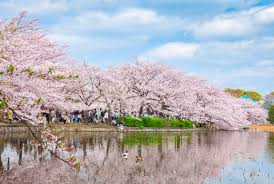
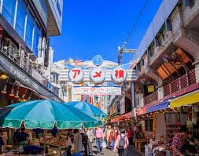
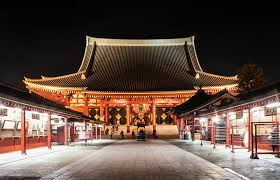
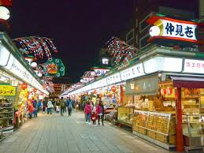
- 꿀팁 : 카드가 안되는 곳이 많으니 현금 필수
- 꿀팁 : 많이 걸어야하니 편한 신발로